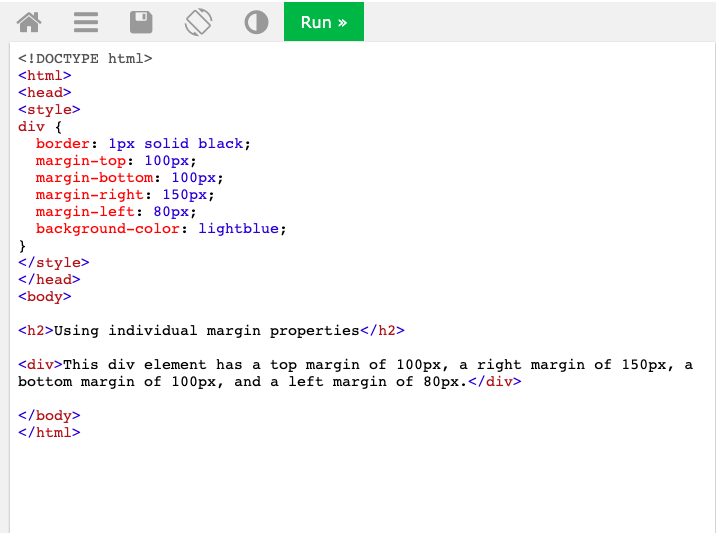
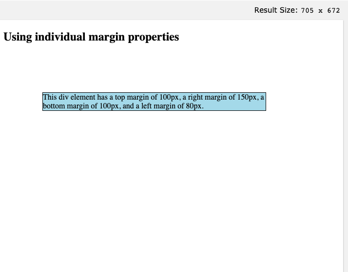
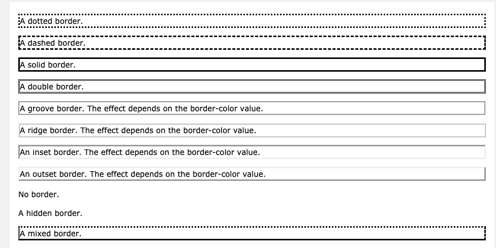
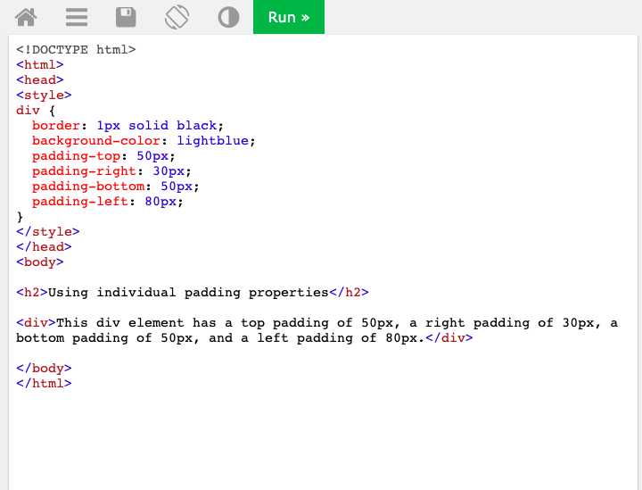
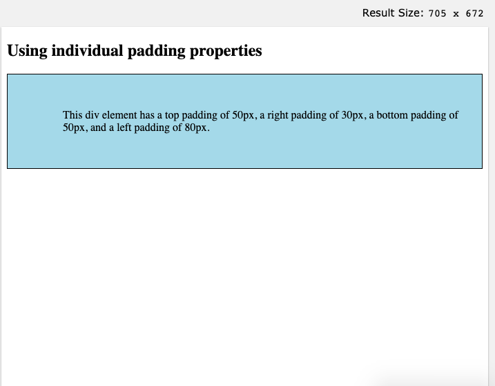

Margin is used to create space around elements outside of defined borders while Border(s) are used to specify the style, width and colour of an element's border. Furthermore Padding is used to create space around an element's content inside of defined borders and it alongside Margin is transparent.
Each property can be compared to a shoe box with the shoes being the content/elements, the paper being the Padding, the box edge being the Border and the space outside of the box edge being the Margin.
Image 1. Illustration of Margin, Border, Padding & Content.
Looking at the below screenshots the div tag has been modified (refer to Image 2) in order to space the outside borders of the boxed content (refer to Image 3).
Image 2. Margin Code Example.
Image 3. Margin Example Live Result.
The border style property specifies what kind of border to display around an element.
In the screenshots below different border styles (see Image 4) are created around different text elements (see Image 5).
Image 4. Border Code Example.
Image 5. Border Example Live Result.
Looking at the screenshots below this time the div tag has been modified in Image 6 to create space inside the borders of the boxed content (refer to Image 7).
Image 6. Padding Code Example.
Image 7. Padding Example Live Result.
< Back to Home